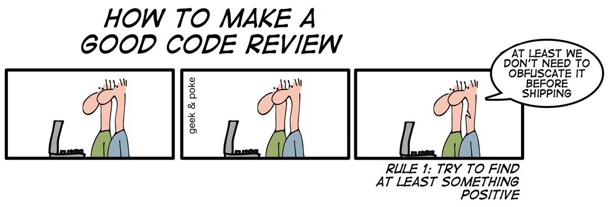
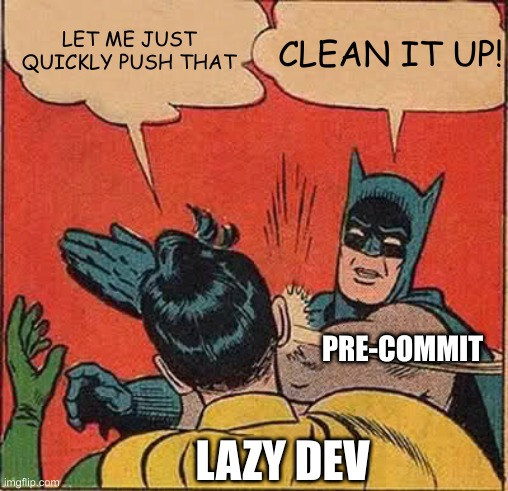

pre-commit hooks are a mechanism of the version control system git. They let you execute code right before the commit. Confusingly, there is also a Python package called pre-commit which allows you to create and use pre-commit hooks with a way simpler interface. The Python package has a plugin system to create git pre-commit hooks automatically. It’s not only for Python projects but for any project.
After reading this article, you will know my favorite plugins for professional software development. Let’s get started!
pre-commit basics
Install pre-commit via:
pip install pre-commit
Create a .pre-commit-config.yaml file within your project. This file contains the pre-commit hooks you want to run every time before you commit. It looks like this:
repos:
- repo: https://github.com/pre-commit/pre-commit-hooks
rev: v3.2.0
hooks:
- id: trailing-whitespace
- id: mixed-line-ending
- repo: https://github.com/psf/black
rev: 20.8b1
hooks:
- id: black
pre-commit will look in those two repositories with the specified git tags for a file called .pre-commit-hooks.yaml. Within that file, arbitrarily many hooks can be defined. They all need an id so that you can choose which ones you want to use. The above pre-commit config would use 3 hooks.
Finally, you need to run pre-commit install to tell pre-commit to always run for this repository.
Before I used it, I was worried about losing control. I want to know exactly which changes I commit. pre-commit will abort the commit if it changes anything. So you can still have a look at the code and check if the changes are reasonable. You can also choose not to run pre-commit:
git commit --no-verify
{kind=link}

File formatting
Formatting files in a similar way helps readability by improving consistency
and keeps git commits clean. For example, you usually don’t want trailing
spaces. You want the text files to end with exactly one newline character so
that some of the Linux command-line tools behave well. You want consistent
newline characters between Linux (\n), Mac (\r — Mac
changed
to \n 🎉) and Windows (\r\n). My configuration for that is:
# pre-commit run --all-files
repos:
- repo: https://github.com/pre-commit/pre-commit-hooks
rev: v3.2.0
hooks:
- id: check-byte-order-marker # Forbid UTF-8 byte-order markers
# Check for files with names that would conflict on a case-insensitive
# filesystem like MacOS HFS+ or Windows FAT.
- id: check-case-conflict
- id: check-json
- id: check-yaml
- id: end-of-file-fixer
- id: trailing-whitespace
- id: mixed-line-ending
{kind=link}

Code style
We can write code in a lot of different ways. Many of them show almost no difference in runtime, but there are differences in readability.
Code Autoformatter

Automatic code formatting has the same advantages as the file formatting. Additionally, it prevents meaningless discussions. Thus, it lets you and your team focus on the important and complicated parts.
I love Python's autoformatter black and mentioned it already in the article about static code analysis:
- repo: https://github.com/psf/black
rev: 20.8b1
hooks:
- id: black
- repo: https://github.com/asottile/blacken-docs
rev: v1.8.0
hooks:
- id: blacken-docs
additional_dependencies: [black==20.8b1]
The first one is black itself, the second one is a project which applies the black formatting to code blocks within documentation.
Additionally, I want my imports to be sorted:
- repo: https://github.com/asottile/seed-isort-config
rev: v2.2.0
hooks:
- id: seed-isort-config
- repo: https://github.com/pre-commit/mirrors-isort
rev: v5.4.2
hooks:
- id: isort
There are autoformatters with pre-commit hooks for many languages:
- Prettier: HTML, CSS, JavaScript, GraphQL, and many more.
- Clang-format: C, C++, Java, JavaScript, Objective-C, Protobuf, C#
- Rustfmt: Rust
Modern Python
pyupgrade runs over your Python code and automatically changes old-style syntax to new-style syntax. Just have a look at some examples:
dict([(a, b) for a, b in y]) # -> {a: b for a, b in y}
class C(object): # -> class C:
pass
from mock import patch # -> from unittest.mock import patch
Do you want it? Here you are:
- repo: https://github.com/asottile/pyupgrade
rev: v2.7.2
hooks:
- id: pyupgrade
args: [--py36-plus]
Testing your Code
I thought about running the unit tests automatically by pre-commit. I decided not to do that as this might take quite a while. However, there are some quick tests which are good to run automatically and every time:
- repo: https://github.com/pre-commit/pre-commit-hooks
rev: v3.2.0
hooks:
- id: check-ast # Is it valid Python?
# Check for debugger imports and py37+ breakpoint() calls
# in python source.
- id: debug-statements
- repo: https://github.com/pre-commit/mirrors-mypy
rev: v0.782
hooks:
- id: mypy
args: [--ignore-missing-imports]
- repo: https://gitlab.com/pycqa/flake8
rev: '3.8.3'
hooks:
- id: flake8
Security
Checking in credentials is a pretty common mistake. Here is how you prevent it:
- repo: https://github.com/pre-commit/pre-commit-hooks
rev: v3.2.0
hooks:
- id: detect-aws-credentials
- id: detect-private-key
Miscellaneous pre-commit hooks
Some hooks don’t fit in the above categories but are still useful. For example, this one prevents big files from being committed:
- repo: https://github.com/pre-commit/pre-commit-hooks
rev: v3.2.0
hooks:
- id: check-added-large-files
Working in a Team
The pre-commit hooks are installed locally and thus every developer could
decide on their own if they want pre-commit hooks and which ones. However, I
think it is helpful to provide a .pre-commit-config.yaml with hooks you
recommend running.
All the hooks!
If you’re looking for a complete .pre-commit-config.yaml ready to use, here it is:
# Apply to all files without committing:
# pre-commit run --all-files
# Update this file:
# pre-commit autoupdate
repos:
- repo: https://github.com/pre-commit/pre-commit-hooks
rev: v3.2.0
hooks:
- id: check-ast
- id: check-byte-order-marker
- id: check-case-conflict
- id: check-docstring-first
- id: check-executables-have-shebangs
- id: check-json
- id: check-yaml
- id: debug-statements
- id: detect-aws-credentials
- id: detect-private-key
- id: end-of-file-fixer
- id: trailing-whitespace
- id: mixed-line-ending
- repo: https://github.com/pre-commit/mirrors-mypy
rev: v0.782
hooks:
- id: mypy
args: [--ignore-missing-imports]
- repo: https://github.com/asottile/seed-isort-config
rev: v2.2.0
hooks:
- id: seed-isort-config
- repo: https://github.com/pre-commit/mirrors-isort
rev: v5.4.2
hooks:
- id: isort
- repo: https://github.com/psf/black
rev: 20.8b1
hooks:
- id: black
- repo: https://github.com/asottile/pyupgrade
rev: v2.7.2
hooks:
- id: pyupgrade
args: [--py36-plus]
- repo: https://github.com/asottile/blacken-docs
rev: v1.8.0
hooks:
- id: blacken-docs
additional_dependencies: [black==20.8b1]
Summary
I love pre-commit as it fits so well in my workflow. I just commit as usual, and pre-commit does all the checks which I sometimes forget. It speeds up development because the CI/CD pipeline is just way slower than executing the same steps locally. Especially for linting, it’s an enormous time-saver to quickly run black over the code instead of committing, waiting for the CI/CD pipeline, finding an error, fixing that error locally, pushing, and waiting again for the CI/CD pipeline.
Please let me know as a comment or email (info@martin-thoma.de) if there are other pre-commit hooks you like!